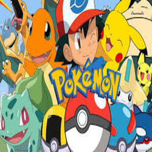

Pokémon é uma franquia japonesa de enorme sucesso criada por Satoshi Tajiri e Ken Sugimori, lançada oficialmente em 1996 pelas empresas Game Freak, Nintendo e Creatures Inc.. A palavra "Pokémon" vem da abreviação de “Pocket Monsters”, ou seja, “monstros de bolso”. A ideia surgiu da paixão de Tajiri por colecionar insetos na infância, o que influenciou o conceito de capturar, treinar e colecionar criaturas fantásticas.
A franquia teve início com dois jogos para o console portátil Game Boy: Pokémon Red e Pokémon Green (no Japão; no Ocidente, Red e Blue). O jogador assumia o papel de um jovem treinador Pokémon, com o objetivo de capturar todos os Pokémon, montar uma equipe forte, enfrentar ginásios e se tornar o campeão da região. Através de batalhas por turnos e da possibilidade de trocar Pokémon com outros jogadores usando um cabo de conexão, o jogo criou uma experiência social inédita para a época.
Com o sucesso dos jogos, a franquia se expandiu rapidamente para outras mídias, incluindo anime, mangás, filmes, brinquedos e um jogo de cartas colecionáveis. O anime, lançado em 1997, teve como protagonista Ash Ketchum (Satoshi, no original japonês), um garoto de 10 anos que recebe seu primeiro Pokémon, o elétrico e carismático Pikachu, e parte em uma jornada para se tornar um Mestre Pokémon. Ao longo dos anos, Ash viajou por várias regiões do mundo Pokémon, sempre com novos amigos, enfrentando adversários e participando de Ligas Pokémon. Apesar de várias derrotas marcantes, ele venceu sua primeira grande competição na Liga de Alola, em 2019, e mais tarde, em Pokémon Journeys, derrotou Leon no Torneio dos Campeões, tornando-se o melhor treinador do mundo. Em 2023, após mais de 25 anos, Ash e Pikachu se despediram como protagonistas, dando início a uma nova era com os personagens Liko e Roy, na série Pokémon Horizons.
UO universo Pokémon é dividido em diferentes regiões, cada uma inspirada em locais reais (como Japão, França, Reino Unido, Havaí, entre outros), e com centenas de espécies diferentes de Pokémon. Cada criatura possui tipos (como fogo, água, planta, psíquico), habilidades e, muitas vezes, evoluções, que representam seu crescimento e fortalecimento. O número total de Pokémon ultrapassa os 1000, divididos em gerações de jogos, que são lançadas em novos consoles ao longo dos anos.
Além do anime e dos jogos principais, Pokémon se destacou com seu jogo de cartas, lançado em 1996, e que se mantém popular até hoje em campeonatos oficiais. Outro grande sucesso foi Pokémon GO, lançado em 2016 para celulares, que usa realidade aumentada para permitir que jogadores capturem Pokémon no mundo real, o que causou um fenômeno global.
A franquia também lançou filmes animados, muitos dos quais foram sucesso de bilheteria, como Pokémon: O Filme (1998), com Mewtwo, e o live-action Pokémon: Detetive Pikachu (2019), o primeiro filme com atores reais e efeitos especiais modernos.
Pokémon se tornou muito mais do que um simples jogo ou desenho animado. É uma parte marcante da cultura pop mundial, influenciando gerações de crianças e adultos, criando comunidades de fãs, eventos internacionais, produtos licenciados, e marcando presença constante na indústria do entretenimento. Com mais de 25 anos de história, Pokémon continua se reinventando, conquistando novos públicos e mantendo sua posição como uma das franquias mais valiosas e queridas do planeta.